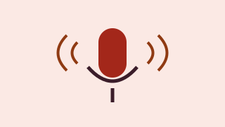

Thank you, even though it was not enough
We did not reach the goal and all donations were returned. We still recorded 35 interviews with a small department fund: you can find them in the library archive.
Recording older people in 40 villages before these dialects disappear.
Voci del Piemonte group · Department of Humanities, University of Turin
Principal investigator: Bruna Ghigo

In many Piedmont villages only older people still speak the local dialect. With them, words, sayings and stories risk disappearing.
The Voci del Piemonte group wanted to record 200 interviews in 40 villages and publish them in a free online archive with transcripts.
| Budget item | Amount |
|---|---|
| Recorders and microphones | €1,200 |
| Transcriptions | €2,000 |
| Online archive | €1,300 |
| Meetings in the villages | €500 |
| Total (goal) | €5,000 |
The campaign is closed: rewards can no longer be chosen. Below you can see how many people chose each one.
We did not reach the goal and all donations were returned. We still recorded 35 interviews with a small department fund: you can find them in the library archive.
Comments are published in the language they were written in.
Luisa C. · · Comment in Italian
Mia nonna parla il dialetto di Mondovì, sarebbe felicissima di partecipare.
Some of the supporters who chose to show their name:
Nicola P., Elisa G., Alessandro Z., Anna R., Roberto V., Federica O., Marco B., Silvia P. and 94 more people, some anonymous.